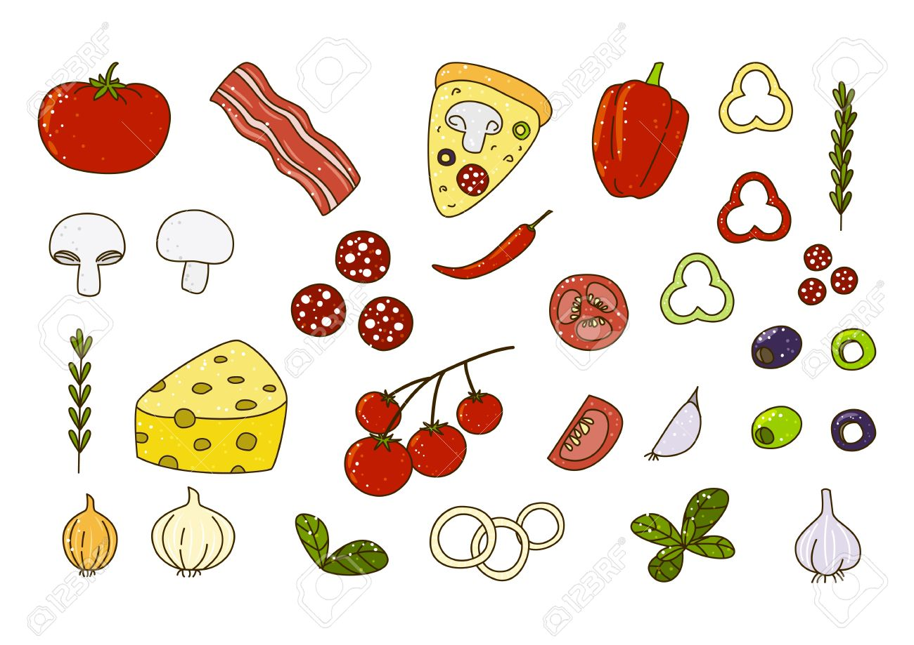

pizza
mi pagina web
!Estoas son algunos ingredientes basicos de la pizza¡
Masa.Es la base de preparaciom y su proceso de elaboracion es fundamental para lograr un buen resultado
Tomate
Mozzarella
Quesos variados
Embutidos italiano
Aceitunas
Champiñones
Para la masa
2 Tazas de harina de trigo
1 Cucharadita de sal
1 Cucharadita de azucar
2 Cucharadita de levadura seca
3/4 De taza de agua tibia
1 Cucharada de aceite de oliva
Para la salsa
1 lata (400 g) de tomate triturado o puré de tomate
1 diente de ajo, picado
1 cucharadita de orégano seco
1 cucharadita de albahaca seca (opcional)
Sal y pimienta al gusto
1 cucharada de aceite de oliva
Imagen de algunosingredientesde la pizza

opcional
Queso Mozzarella rallado ....
Pepperoni, Jamon, champiñones, pimientos, cebolla, aceituas, etc